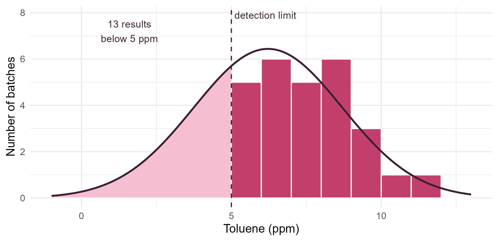
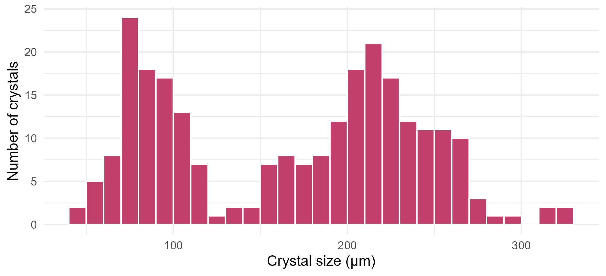
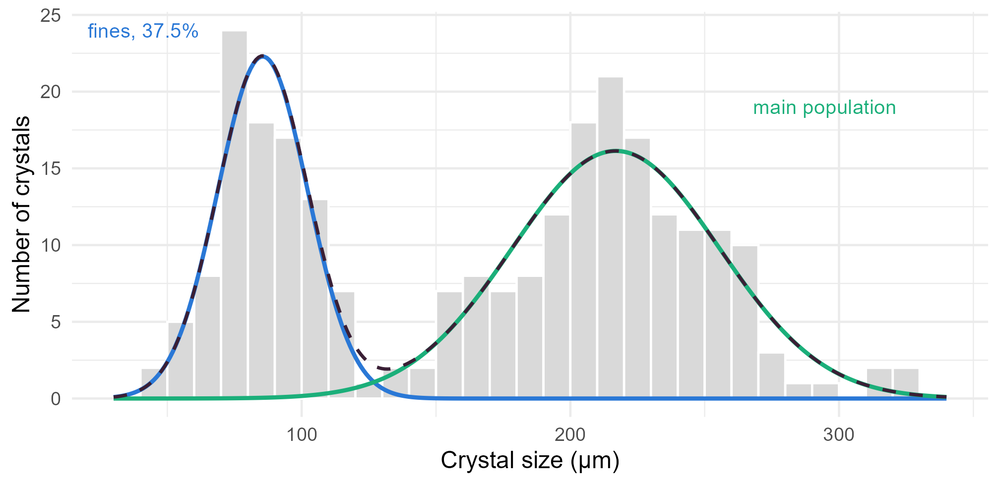

Module 4 · Lesson 10 of 14 Week 70 of 160 About 5–7 hours
The EM algorithm
Filling in what you can’t see: detection limits and hidden populations
Maximize likelihoods with missing information by alternating an expectation step and a maximization step. Estimate the mean toluene level when a third of the results are below the detection limit, and compare with substituting half the limit. Then separate the fines from the main population in a crystallizer’s size distribution with a two-component normal mixture, watch the log-likelihood climb, and see how starting values matter.
Some likelihoods would be easy, if only you knew one more thing. In Lesson 1.11, the lab’s titrator reported some water results as “<20 ppm”, and the database stored them as 10 ppm, half the detection limit, “so that the choice can be revisited”. Now we revisit it. If you knew those results exactly, estimating the mean would be trivial. You don’t, but you do know something: each one is below the limit.
The EM algorithm (expectation-maximization, named and generalized by Dempster, Laird and Rubin in 1977) turns that situation into a simple loop. Fill in what you can’t see with its expected value, given your current estimates (the E-step). Estimate the parameters as if the filled-in data were real (the M-step). Repeat. Each round, the likelihood goes up, and the estimates converge to the maximum likelihood estimates.
EM is like a detective who guesses the missing clues, re-solves the case, uses the new answer to guess the clues better, and keeps going until the story stops changing. Elementary, my dear Watson!
In this lesson you’ll:
- see why substituting half the detection limit is biased
- run EM for data below a detection limit, and check it against direct maximum likelihood
- fit a two-population mixture model to crystal sizes with EM
- watch the log-likelihood climb at every step
- see how starting values decide where EM ends up
Results below the detection limit
The GC can’t quantify toluene below 5 ppm. Of the last 40 batches, 27 have a result, and 13 were reported as “<5 ppm”:
head(tol)
#> # A tibble: 6 × 4
#> batch_id toluene_ppm lod_ppm below_lod
#> <chr> <dbl> <dbl> <lgl>
#> 1 T01 6.09 5 FALSE
#> 2 T02 5.19 5 FALSE
#> 3 T03 11.6 5 FALSE
#> 4 T04 5.8 5 FALSE
#> 5 T05 6.17 5 FALSE
#> 6 T06 NA 5 TRUE
sort(detected)
#> [1] 5.11 5.19 5.69 5.80 5.86 6.09 6.12 6.17 6.39 6.75 6.84 7.10
#> [13] 7.30 7.42 7.69 7.80 8.03 8.17 8.56 8.67 8.67 8.89 9.23 9.32
#> [25] 9.67 10.45 11.65What’s the mean toluene level? There are several quick answers, and they disagree:
- Drop the censored results and average the other 27. That ignores that the 13 missing results are all low, so it’s biased upward.
- Substitute the limit, 5 ppm, which overstates every censored result.
- Substitute half the limit, 2.5 ppm, the plant’s convention.
- Substitute zero, which understates them all.
Your turn. The setup code has the 27 detected results as detected, and the number below the limit as n_below. Compute the mean the first three ways.
Half the limit is 2.5 ppm.
c(drop = mean(detected),
limit = (sum(detected) + n_below * 5) / 40,
half_limit = (sum(detected) + n_below * 2.5) / 40)7.58, 6.74 and 5.93 ppm: a spread of more than 1.6 ppm, just from how the 13 results are handled. Which is right? None of them, quite. The substitution methods also wreck the SD: with every censored result at exactly 2.5 ppm, the data get an artificial spike, and the SD comes out at 2.76. EM does better.
EM for censored data
Suppose the toluene levels are normal with mean \mu and SD \sigma. If we had all 40 values, the maximum likelihood estimates would be the mean and the (divide-by-n) SD, which only need two sums: \sum x_i and \sum x_i^2. EM fills in the censored results’ contributions to those two sums with their expected values, given that each one is below L = 5 and given the current estimates.
For a normal variable below L, with c = (L - \mu)/\sigma and \lambda = \phi(c)/\Phi(c) (the normal density over the normal CDF at c), the truncated normal distribution gives
E[X \mid X < L] = \mu - \sigma\lambda, \qquad E[X^2 \mid X < L] = \mu^2 + \sigma^2 - \sigma(L + \mu)\lambda .
So one round of EM is:
- E-step: compute E[X \mid X < L] and E[X^2 \mid X < L] at the current \mu and \sigma.
- M-step: \mu_{\text{new}} = \left(\sum_{\text{detected}} x_i + n_{\text{below}}\, E[X \mid X < L]\right)/n, and \sigma^2_{\text{new}} = \left(\sum_{\text{detected}} x_i^2 + n_{\text{below}}\, E[X^2 \mid X < L]\right)/n - \mu_{\text{new}}^2.
Your turn. Write the E-step function, and evaluate it at \mu = 6 and \sigma = 2.5.
\lambda divides the normal density by the normal CDF, pnorm().
e_step <- function(mu, sigma) {
cc <- (L - mu) / sigma
lam <- dnorm(cc) / pnorm(cc)
c(EX = mu - sigma * lam, EX2 = mu^2 + sigma^2 - sigma * (L + mu) * lam)
}
e_step(6, 2.5)If the toluene levels were N(6, 2.5^2), a result below 5 ppm would be 3.33 ppm on average. That’s more than half the limit, 2.5 ppm. A numerical integral of x times the truncated density gives the same 3.33, which is a good check of the formula.
Your turn. Now run EM: start from the mean and SD of the detected results, and repeat the E-step and the M-step 100 times.
The mean uses the expected value of X: e[["EX"]].
e_step <- function(mu, sigma) { # your E-step, from the last exercise
cc <- (L - mu) / sigma
lam <- dnorm(cc) / pnorm(cc)
c(EX = mu - sigma * lam, EX2 = mu^2 + sigma^2 - sigma * (L + mu) * lam)
}
mu <- mean(detected)
sigma <- sd(detected)
for (i in 1:100) {
e <- e_step(mu, sigma) # E-step
mu_new <- (sum(detected) + n_below * e[["EX"]]) / n # M-step
sigma <- sqrt((sum(detected^2) + n_below * e[["EX2"]]) / n - mu_new^2)
mu <- mu_new
}
c(mu = mu, sigma = sigma)\hat\mu = 6.22 ppm and \hat\sigma = 2.48 ppm. Maximizing the censored likelihood directly with optim(), as in Lesson 9 (detected results contribute the density, censored ones \Phi(c)), gives the same values to six digits. The data were simulated from a mean of 6.0 and an SD of 2.5, so EM is close to the truth, and much closer than dropping the censored results (7.58). Half the limit gave 5.93, not too far off here, but its SD is wrong, and the module project shows that its error depends on how much is censored.
Here are the detected results, with the fitted normal distribution. EM accounts for the part of the curve below the limit, where the 13 censored results must be:
mu_hat <- 6.222980; sigma_hat <- 2.478307
curve_df <- data.frame(t = seq(-1, 13, by = 0.05))
curve_df$y <- 40 * dnorm(curve_df$t, mu_hat, sigma_hat)
ggplot(data.frame(t = detected), aes(x = t)) +
geom_area(data = subset(curve_df, t <= 5), aes(x = t, y = y), fill = "#F4C0D1") +
geom_histogram(aes(y = after_stat(count)), binwidth = 1, boundary = 5, fill = "#C2416C", color = "white") +
geom_line(data = curve_df, aes(x = t, y = y), color = "#3A1F35", linewidth = 0.9) +
geom_vline(xintercept = 5, linetype = "dashed", color = "#3A1F35") +
annotate("text", x = 1.6, y = 7.2, label = "13 results\nbelow 5 ppm", size = 3.6, color = "#3A1F35") +
annotate("text", x = 5.1, y = 7.9, label = "detection limit", hjust = 0, size = 3.6, color = "#3A1F35") +
labs(x = "Toluene (ppm)", y = "Number of batches") +
theme_minimal(base_size = 12)
Mixture models
The second kind of hidden information is a latent variable: a label that every observation has, but nobody recorded. Lesson 4 simulated crystal sizes from two populations, fines and the main population. Here are 250 real crystals from the crystallizer’s image analyzer:
ggplot(crystals, aes(x = size_um)) +
geom_histogram(binwidth = 10, boundary = 0, fill = "#C2416C", color = "white") +
labs(x = "Crystal size (µm)", y = "Number of crystals") +
theme_minimal(base_size = 12)
Two humps. The model is a two-component normal mixture: each crystal is a fine with probability p, with size N(\mu_1, \sigma_1^2), and otherwise from the main population, N(\mu_2, \sigma_2^2). If we knew which crystals were fines, we’d just compute the two groups’ means and SDs. We don’t, so EM fills in the labels with probabilities.
- E-step: for each crystal, the responsibility of the fines is the posterior probability that it’s a fine, by Bayes’ theorem (as in Lesson 3.13): r_i = \frac{p\, \phi(x_i; \mu_1, \sigma_1)}{p\, \phi(x_i; \mu_1, \sigma_1) + (1 - p)\, \phi(x_i; \mu_2, \sigma_2)}.
- M-step: weighted versions of the obvious estimates: p = \bar r, \mu_1 = \sum r_i x_i / \sum r_i, \sigma_1^2 = \sum r_i (x_i - \mu_1)^2 / \sum r_i, and the same for the main population with weights 1 - r_i.
Your turn. Start from p = 0.5, \mu_1 = 100, \mu_2 = 200 and both SDs 30. Compute the responsibilities.
The main population’s mean is m2.
p <- 0.5; m1 <- 100; s1 <- 30; m2 <- 200; s2 <- 30
a <- p * dnorm(x, m1, s1) # fines
b <- (1 - p) * dnorm(x, m2, s2) # main population
r <- a / (a + b)
data.frame(size = head(x), responsibility = round(head(r), 4))The 71.6 µm crystal is almost surely a fine (0.9998), and the 228.8 µm one almost surely not (0.0002). The 151.8 µm crystal, halfway between the two means, is a coin toss: 0.45. EM doesn’t force a decision. It keeps the uncertainty, and each crystal counts as 0.45 of a fine and 0.55 of a main-population crystal in the M-step.
Your turn. Now the M-step: update the five parameters from the responsibilities.
A weighted mean divides by the sum of the weights, sum(r).
p <- 0.5; m1 <- 100; s1 <- 30; m2 <- 200; s2 <- 30
a <- p * dnorm(x, m1, s1); b <- (1 - p) * dnorm(x, m2, s2); r <- a / (a + b)
p_new <- mean(r)
m1_new <- sum(r * x) / sum(r)
m2_new <- sum((1 - r) * x) / sum(1 - r)
s1_new <- sqrt(sum(r * (x - m1_new)^2) / sum(r))
s2_new <- sqrt(sum((1 - r) * (x - m2_new)^2) / sum(1 - r))
c(p = p_new, mu1 = m1_new, s1 = s1_new, mu2 = m2_new, s2 = s2_new)After one round: 41% fines, with means of 90.7 and 220.8 µm and SDs of 24.3 and 35.7 µm. The fines already look narrower than the starting guess, and the main population broader. Now repeat.
Convergence
EM has a remarkable property: the likelihood never goes down. Each E-step builds a function that touches the log-likelihood at the current estimates and lies below it everywhere else, and each M-step climbs to that function’s maximum. So the log-likelihood rises at every step until it levels off at a maximum. A good stopping rule is to stop when it rises by less than a tiny amount, such as 10^{-8}.
Your turn. Put the E- and M-steps in a loop, record the log-likelihood after every round, and stop when it stops rising.
Stop when the gain is below 1e-8.
p <- 0.5; m1 <- 100; s1 <- 30; m2 <- 200; s2 <- 30
ll <- mixll(p, m1, s1, m2, s2) # the log-likelihood at the start
for (i in 1:1000) {
a <- p * dnorm(x, m1, s1); b <- (1 - p) * dnorm(x, m2, s2); r <- a / (a + b)
p <- mean(r); m1 <- sum(r * x) / sum(r); m2 <- sum((1 - r) * x) / sum(1 - r)
s1 <- sqrt(sum(r * (x - m1)^2) / sum(r)); s2 <- sqrt(sum((1 - r) * (x - m2)^2) / sum(1 - r))
ll <- c(ll, mixll(p, m1, s1, m2, s2))
if (ll[length(ll)] - ll[length(ll) - 1] < 1e-8) break
}
c(iterations = i, loglik = ll[length(ll)], p = p, mu1 = m1, s1 = s1, mu2 = m2, s2 = s2)14 rounds. 37.5% of the crystals are fines, of 85.5 \pm 16.8 µm, and the main population is 216.9 \pm 38.6 µm. The log-likelihood rose from −1416.3 to −1349.4, and all(diff(ll) >= 0) confirms it never fell. (The crystals were simulated from 35% fines of 85 \pm 18 µm and 210 \pm 38 µm, so EM recovered the populations well from 250 crystals.)
Here’s the fitted mixture on the histogram, with its two components:
pr <- fit_mix$par
dens <- data.frame(s = seq(30, 340, by = 1))
dens$fines <- pr[["p"]] * dnorm(dens$s, pr[["mu1"]], pr[["s1"]]) * 250 * 10
dens$main <- (1 - pr[["p"]]) * dnorm(dens$s, pr[["mu2"]], pr[["s2"]]) * 250 * 10
dens$mixture <- dens$fines + dens$main
ggplot(crystals, aes(x = size_um)) +
geom_histogram(binwidth = 10, boundary = 0, fill = "grey85", color = "white") +
geom_line(data = dens, aes(x = s, y = fines), color = "#2a78d6", linewidth = 1) +
geom_line(data = dens, aes(x = s, y = main), color = "#1baf7a", linewidth = 1) +
geom_line(data = dens, aes(x = s, y = mixture), color = "#3A1F35", linewidth = 0.8, linetype = "dashed") +
annotate("text", x = 62, y = 24, label = "fines, 37.5%", color = "#2a78d6", size = 3.6, hjust = 1) +
annotate("text", x = 268, y = 19, label = "main population", color = "#1baf7a", size = 3.6, hjust = 0) +
labs(x = "Crystal size (µm)", y = "Number of crystals") +
theme_minimal(base_size = 12)
NoteGo deeper: why EM is slow, and when it struggles
EM converges linearly, like bisection. Its rate depends on how much information is missing: when the populations overlap heavily, each round only improves the estimates a little, and EM can need thousands of rounds. Newton’s method on the same likelihood would converge quadratically, but EM’s steps are simpler, never leave the valid range (probabilities stay between 0 and 1, and SDs stay positive) and never decrease the likelihood. That’s why EM is so popular.
Two traps. EM finds a maximum, not necessarily the highest one, so run it from several starting values and keep the best. And a mixture’s likelihood is unbounded: if one component shrinks onto a single data point, its SD goes to 0 and the likelihood to infinity. Starting values with sensible SDs, and a check that no SD collapses, avoid that.
Challenge round
Challenge 1 · Starting values. The setup code has em_mix(), which runs this lesson’s EM from any starting values. Run it from three starts: the sensible one (100 and 200 µm), a start where the two components are identical (both 170 µm, SD 60), and a start with the labels swapped (250 and 80 µm). Compare where they end up.
For identical components, the second SD is also 60.
fits <- list(sensible = em_mix(0.5, 100, 30, 200, 30),
identical = em_mix(0.5, 170, 60, 170, 60),
swapped = em_mix(0.5, 250, 30, 80, 30))
t(sapply(fits, function(f) c(round(f$par, 3), loglik = tail(f$loglik, 1))))The swapped start finds the same fit with the labels exchanged: 62.5% in “component 1”, which is now the main population. That’s label switching, and it’s harmless. The identical start is stuck: both components stay at 167.6 µm with an SD of 71.3, a single normal distribution, with a much worse log-likelihood (−1421.5 against −1349.4). With identical components, every crystal gets a responsibility of exactly 0.5, so the M-step keeps them identical forever. It’s a stationary point, but not a maximum, and EM can’t escape it. Always try several different starts.
Challenge 2 · Counting the fines. Use the fitted mixture to classify each crystal: a fine if its responsibility is above 0.5. How many fines are there, and how many crystals are genuinely uncertain (a responsibility between 0.1 and 0.9)?
A crystal is a fine if its responsibility is above 0.5: sum(r > 0.5) counts them.
fit <- em_mix(0.5, 100, 30, 200, 30)$par
a <- fit[["p"]] * dnorm(x, fit[["mu1"]], fit[["s1"]])
b <- (1 - fit[["p"]]) * dnorm(x, fit[["mu2"]], fit[["s2"]])
r <- a / (a + b)
c(fines = sum(r > 0.5), uncertain = sum(r > 0.1 & r < 0.9))95 fines, 38% of the crystals, close to the mixture’s estimated 37.5%. Only 5 crystals are genuinely uncertain, all between 115 and 135 µm, near the point where the two weighted components cross, 127 µm. The populations are well separated, so a sieve at about 127 µm would remove the fines almost exactly. That’s the kind of practical answer a mixture model can give.
Quick quiz
1. What does the E-step of EM compute?
For censored data, the expected censored values. For a mixture, the probabilities of each label.
2. Why is “drop the results below the detection limit” biased?
The missing values aren’t missing at random: they’re missing because they’re low.
3. What happens to the log-likelihood from one EM iteration to the next?
That’s EM’s guarantee, and a good check of your code: if it ever falls, there’s a bug.
4. In a two-component mixture, what’s a crystal’s responsibility?
EM keeps the uncertainty: a crystal halfway between the populations counts half in each.
5. EM started with two identical components stays stuck. Why?
It’s a stationary point of the likelihood, but not a maximum. Start from different values.
6. Compared with Newton’s method, EM usually converges…
Its rate depends on the share of information that’s missing.
Wrap-up
You can now maximize likelihoods with missing pieces. Here’s what you’ve learned:
- The EM algorithm alternates an E-step (fill in the missing information with its expectation, given the current estimates) and an M-step (maximize as if the data were complete).
- Censored data: the expected value of a result below the limit comes from the truncated normal. The mean toluene level is 6.22 ppm with an SD of 2.48, where dropping the censored results gave 7.58 and half the limit 5.93 (with the wrong SD).
- Mixtures: the responsibilities are posterior probabilities of the hidden labels. The crystallizer makes 37.5% fines of 85.5 µm, and a main population of 217 µm.
- Convergence: the log-likelihood never falls. EM converges linearly, here in 14 to 17 rounds. Stop when the gain is tiny.
- Starting values: identical components get stuck, swapped labels are harmless, and in general EM finds a local maximum, so try several starts.
TipPractice in RStudio (optional, about an hour)
Download impurity_lod.csv and crystal_sizes.csv into your project’s data-raw/ folder.
- How fast? Record \hat\mu at every iteration of the censored EM, and plot |\hat\mu_t - \hat\mu| on a log scale against t. A straight line means linear convergence. Estimate the rate (the ratio of successive errors), and compare it with the share of censored results, 13/40.
- A different limit. Pretend the limit were 7 ppm: censor every detected result below 7 too. Rerun the naive methods and EM. Which methods get worse as more data are censored? (The module project studies this properly, with a simulation.)
- Three components. Extend
em_mix()to three components, and fit it to the crystal sizes. Does the log-likelihood improve by much? Compare the two models with AIC (Lesson 2.12): \text{AIC} = -2\ell + 2 \times (number of parameters). - The mclust way. The
mclustpackage fits mixtures with EM and chooses the number of components by BIC. Install it, runsummary(mclust::Mclust(crystals$size_um)), and compare its answer with yours.
NoteKey words from this lesson
- EM algorithm
- An algorithm for maximum likelihood with missing information, alternating an expectation step and a maximization step.
- Censored data
- Values known only to lie in a range, such as results below a detection limit.
- Detection limit
- The lowest value a measurement method can report reliably. Results below it are reported as “<limit”.
- Latent variable
- A variable that every observation has but that wasn’t observed, such as the population a crystal came from.
- Mixture model
- A model in which each observation comes from one of several distributions, each with its own probability.
- Responsibility
- In a mixture, the posterior probability that an observation came from a given component.
- Label switching
- The same mixture fit, with the components numbered in a different order.
NoteWant to read more?
- Roger Peng, Advanced Statistical Computing, chapter 4, “The EM algorithm”, with the two-part normal mixture and censored data as its examples, and why the likelihood never falls.
- Arthur Dempster, Nan Laird and Donald Rubin, “Maximum likelihood from incomplete data via the EM algorithm”, Journal of the Royal Statistical Society B (1977). The paper that named EM and proved its properties. One of the most cited papers in statistics.
- Dennis Helsel, Statistics for Censored Environmental Data Using Minitab and R (Wiley, 2nd edition, 2012). Detection limits in practice, and why substitution fails. Not free, but the module project draws on its ideas.